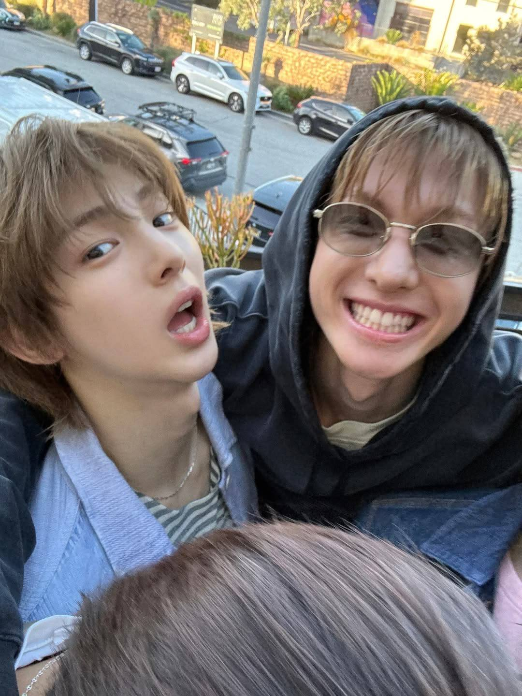
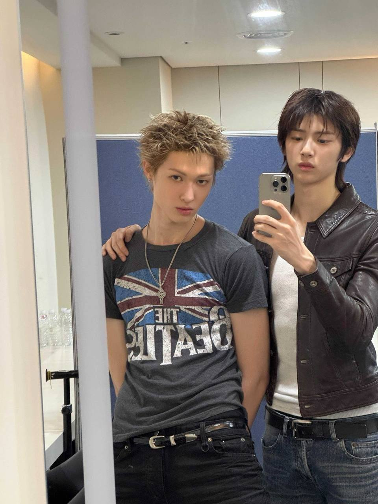
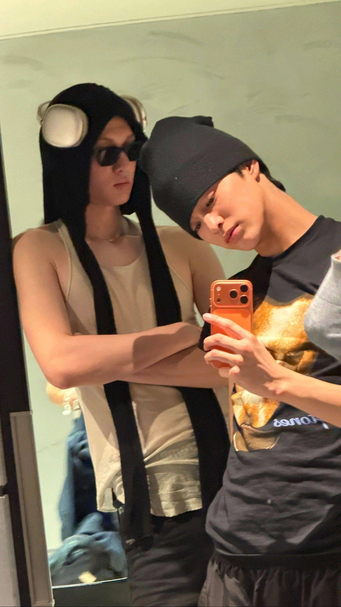
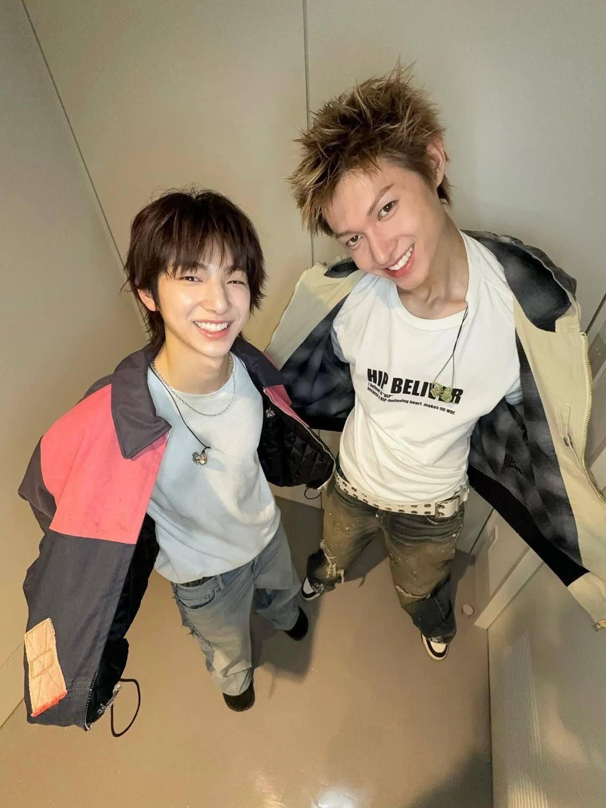
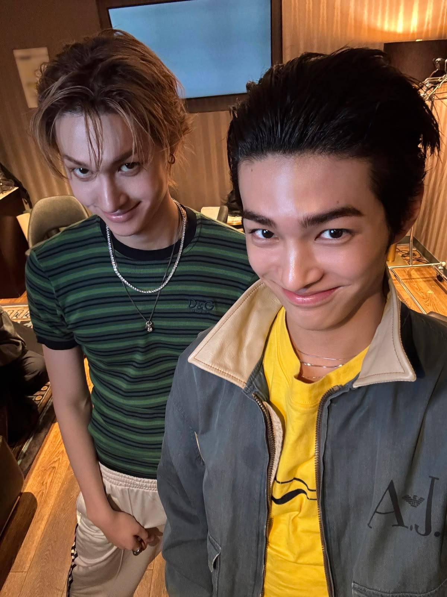
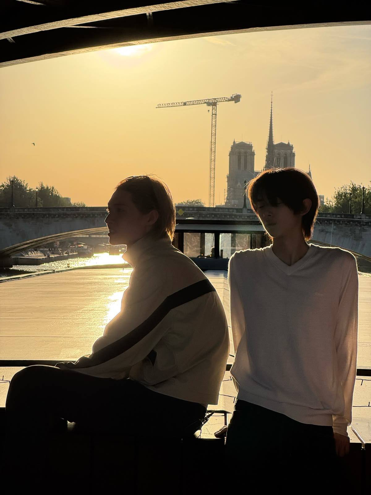
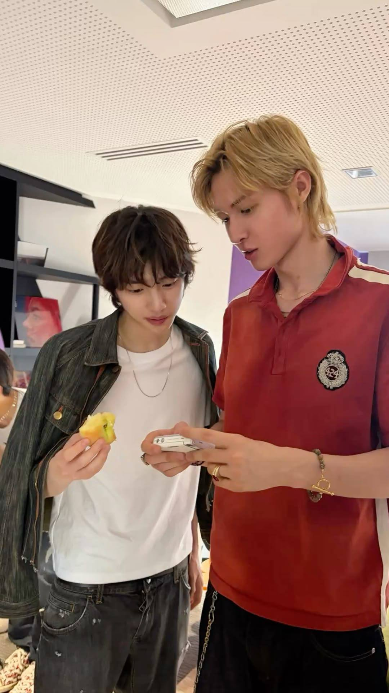

Home isn't a place,
it's a person.



I don't think I say this enough, but I'm really glad you exist, and even more glad that somehow, I got to know you. Thank you for being here, for being yourself, and for bringing little bits of happiness into my days without even trying. Kamu mungkin ga nyadar kalau those little things you do mean to me, from the way you talk about your day to the random things you share with me, and even the moments when we're not really talking about anything important. I'm grateful that I get to know you beyond the things people usually see, to learn about your thoughts, your habits, your likes and dislikes, and all the little parts of you that make you who you are. aku seneng bisa kenal kamu sejauh ini, bisa punya seseorang yang kehadirannya bikin aku senyum sendiri, dan punya alasan sederhana buat nantiin hari esok hahaha. life doesn't always have to be exciting for it to feel special, and I think that's something I've come to appreciate since knowing you. it's the ordinary moments, the silly conversations, and the comfort of having you around that make everything feel a little warmer. I hope you know that you don't always have to do something extraordinary to make me happy, because just being you is already something I appreciate. and if there's one thing I want you to remember, it's that I'm genuinely thankful our paths crossed. out of all the people I could've met, I'm glad it was you.



Honestly, I've been thinking about how to put all of this into words, dan bahkan aku masih bingung mulai dari mana. There are so many things I want to tell you, but I guess the simplest way to begin is by being honest about what I feel. I think I like you, and I think I've reached a point where I don't want to keep these feelings to myself anymore. Somewhere along the way, you became someone I genuinely look forward to talking to, someone yang tanpa sadar jadi bagian dari hari-hari aku. It's in the little things, the random conversations, the way we talk about the most unimportant things, and how even the simplest moments with you can make me smile. Senang rasanya bisa kenal kamu, ngobrol sama kamu, I don't have to force a conversation or think too much about what I should say next. It's hard to explain, and the more I get to know you, the more I realize that what I feel isn't just a passing crush. It's something I actually want to understand, something I want to give a chance to grow into something more. I don't think there's one specific moment when I started liking you this much. Maybe it happened little by little, through all the conversations we've had and all the little things I've come to appreciate about you. One day, you were just someone I talked to, and then suddenly, you became someone whose messages I look forward to, someone I want to tell random stories to, and someone who crosses my mind even when I'm busy doing other things. It's funny how that happens, isn't it? How someone can slowly become important without either of you really noticing when it started. And I guess that's what happened to me. Aku mulai sadar kalau aku pengin kenal kamu lebih jauh, bukan cuma tahu hal-hal yang kelihatan dari luar, but also the little details that make you who you are. I want to know about your good days, your bad days, hal-hal yang ngebuat kamu excited, hal-hal yang ngebuat kamu ngerasa takut, and all those random thoughts that you might not usually share with everyone. I want to be someone you feel comfortable telling those things to, too. And before anything else, I really want to thank you for being patient with me. Thank you for being willing to wait for certainty, for giving me time to figure out what I truly feel, and for not making me feel like I had to force an answer before I was ready. I know waiting for someone to be sure about their feelings isn't always easy. Mungkin ada saatnya kamu juga bertanya-tanya tentang aku, tentang perasaan aku, atau tentang apakah semua ini bakal berakhir sesuai yang kamu harapkan. Aku ngerti itu, and I don't take your patience lightly. I'm sorry if the time I needed made you feel uncertain, or if there were moments when you didn't know what to expect from me. Aku sadar kalau kamu juga punya perasaan yang perlu dijaga, kamu juga punya hati yang nggak seharusnya dibiarkan terus-terusan nunggu tanpa kejelasan. That's why I wanted to be honest with myself first, because I didn't want to give you an answer just because I felt bad for making you wait. I wanted my answer to come from a genuine place, from a feeling that I was sure I wanted to pursue. And now that I'm finally saying all of this, I hope you know that I'm not doing it out of guilt or because I feel like I owe you something. I'm doing this because I want to, because my feelings for you are real, and because I genuinely want to see where we could go together. I also want you to know that I appreciate you more than I probably say out loud. Maybe I don't always express things in the best way, and maybe there are times when I keep too much to myself, but that doesn't mean I don't care. Sometimes, I need a little time to understand my own feelings before I can explain them to someone else. And I'm glad that I had the chance to do that instead of rushing into something I wasn't ready to answer. Sekarang aku nggak mau cuma terus-terusan menyimpan perasaan ini sambil membiarkan kamu bertanya-tanya. I want you to know where I stand, and I want you to know that I see you as someone I'd genuinely like to have in my life, not just for a little while, but as someone I want to keep getting to know. Of course, I know that liking each other is only the beginning. There's still so much we have to learn about one another, and there will probably be things we won't always understand right away. But honestly, I don't think we need to have everything figured out from the start. We can learn as we go, kan? Yang penting buat aku adalah kita sama-sama punya keinginan buat nyoba, sama-sama mau pahami satu sama lain, dan ga langsung nyerah ketika ada hal yang perlu dibicarakan. I want something genuine with you, something that doesn't have to be perfect to be meaningful. I want the little things, the ordinary days, the random updates about what we're doing, the conversations that go on longer than we planned, and the moments when neither of us really has anything interesting to say but still wants to stay. I want to laugh with you over the dumbest things, listen to your stories even when they're completely random, and share mine without feeling like I'm bothering you. I want to know what it's like to be someone you can rely on, someone who gets to celebrate your achievements and encourage you when things don't go the way you hoped. And I want you to have that with me, too. Aku pengin kita bisa saling cerita tanpa takut dianggap berlebihan, saling mengingatkan kalau ada yang salah, dan saling ngasih ruang kalau salah satu dari kita memang butuh waktu sendiri. I don't expect us to understand each other perfectly all the time, but I hope we can always try. I want us to feel safe enough to be honest, even when the conversation isn't easy, because to me, that's part of what makes a relationship worth having. So, I guess this is me finally taking that step and telling you what I've been wanting to say. I like you, and I'd really love to take this feeling somewhere with you. I don't want to leave us wondering what we could have been if we had just been brave enough to try. I want to give us that chance, to see how this connection grows when we both choose to be part of it. Aku nggak bisa janji kalau aku bakal selalu tahu cara terbaik buat menghadapi semuanya, and I know there will be things I'll have to learn along the way. But I can promise that I'll try to communicate with you, listen to you, and make an effort to understand you instead of expecting you to figure everything out on your own. I want us to build something that feels right for both of us, something where we don't have to pretend to be different people just to be loved. I want to choose you in the little ways, not only through sweet words but also through the way I treat you, the way I make time for you, and the way I try to work things out with you. And lastly, thank you for waiting for me to reach this point. Thank you for being patient when I hadn't found the right answer yet, and for giving me the opportunity to figure out what I wanted without having to rush my feelings. I know that saying thank you doesn't erase the uncertainty you might have felt, but I hope that from here on, I can give you something more certain through my actions. You don't have to keep wondering whether I want this, because I do. I want to try with you, I want to get closer to you, and I want to see what we can become together. Aku nggak mau kamu jadi satu-satunya orang yang berusaha mempertahankan kemungkinan ini, because if we're going to do this, I want us to walk into it together. I want you to feel wanted, appreciated, and chosen, the same way you've made me feel that your presence is something worth holding on to. And if you're still willing to have me, then I'd love to be yours. No more leaving this feeling hanging between us, no more making you wonder about my answer. I like you, and I want to be with you. So, can I be yours? Will you be my boyfriend?